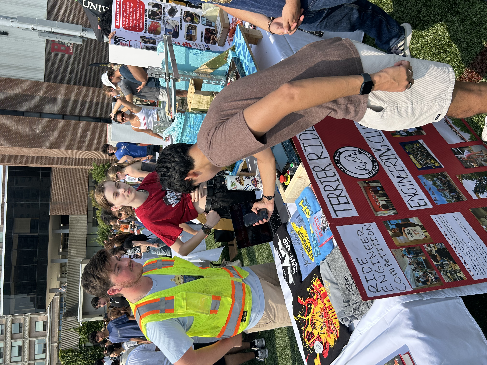

Leadership
Data / Software Engineer Project Leader
Van Dyk Recycling Solutions
Leader a team of fellow interns at Van Dyk Recycling Solutions in order to build a custom software for employee use. Helped organized meetings and task for developement teams and presented the project to company executives
Social Outreach Chair
Terrier Ride Engineering Club (TREC)
As Social Chair of the Terrier Ride Engineering Club, I organize events and activities that bring our members together outside of projects. My role focuses on building a strong community where students can connect, collaborate, and share their passion for themed entertainment. From planning socials to helping coordinate guest speaker events, I work to make sure everyone feels engaged and included.
